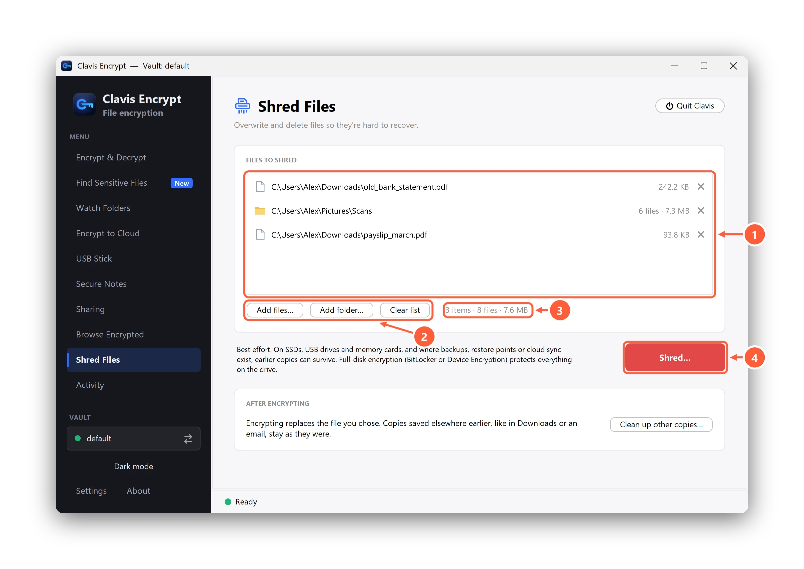
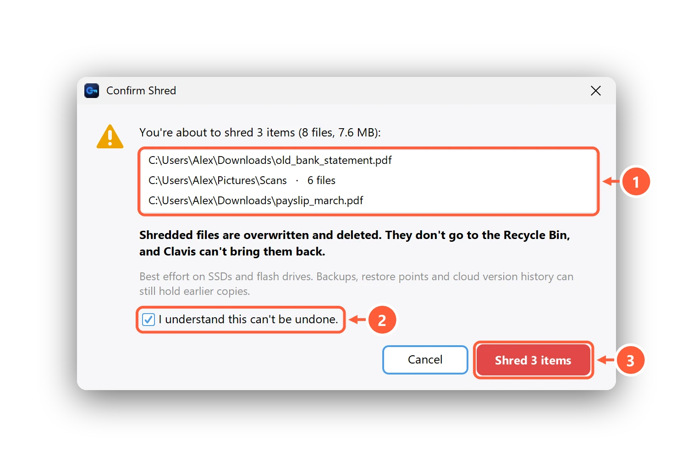

Can you permanently delete a file on Windows 11? What actually works
You're about to sell your laptop, or you've finally encrypted that Aadhaar scan or old bank statement, and you want the readable copy gone for good. Windows says Shift+Delete will "permanently delete" a file. A dozen free shredders promise the same. The honest answer depends on where the file lives: a hard disk, an SSD, a USB stick, a cloud folder, or a backup you forgot about. Here's what each one really does, what the research says, and what actually protects a file.
What Delete actually does on Windows 11
- Delete moves the file to the Recycle Bin. It's still there, fully readable, until you empty the bin.
- Shift+Delete or Empty Recycle Bin removes the file's entry and marks its space as free. The contents stay where they were until something else is written there.
- That's why recovery tools work. Microsoft makes one itself: Windows File Recovery, a free command-line app in the Microsoft Store for files "that can't be restored from the Recycle Bin", on internal drives, external drives and USB devices.
- On an SSD, Windows also sends TRIM: it tells the drive which blocks were freed. Microsoft documents it as on by default for NTFS, the file system on almost every Windows 11 PC. Most SSDs then stop returning the old data, which is why Microsoft's recovery page warns that the space may already be overwritten, "especially on a solid-state drive (SSD)". TRIM is a hint to the drive, not an erase: the study below found it "does not have any reliable effect on data security".
To check TRIM yourself, open Terminal as administrator and run fsutil behavior query DisableDeleteNotify. NTFS DisableDeleteNotify = 0 means TRIM is on.
It depends on where the file is
| Where the file is | After a normal delete | Does overwriting first (shredding) help? |
|---|---|---|
| Hard disk (HDD) | Contents stay until reused; recovery tools often find them | Yes. One pass of overwriting is enough |
| SSD inside the PC | TRIM usually stops ordinary recovery, but old copies can stay in the flash | Only partly. The drive may write the new data somewhere else |
| USB stick, pen drive, memory card | Usually no Recycle Bin, often recoverable | Only partly, for the same reason as SSDs |
| OneDrive, Google Drive, Dropbox | Kept in the cloud's recycle bin and version history, usually for 30 days | No. Overwriting a synced file just uploads a new version |
| File History, backup drives, restore points | Earlier copies stay until they expire or are deleted | No. Shredding doesn't touch them |
| Email, WhatsApp Desktop, Telegram, Downloads | Their own copies stay as they were | Only if you shred those copies too |
Hard disks: one overwrite is enough
On a spinning hard disk, writing over a file's space replaces its contents. The old belief that you need 7 or 35 passes doesn't hold up for modern drives. NIST's FAQ for SP 800-88 Rev. 2 (the US government's media-sanitization guidance) says plainly that "multi-pass overwriting is unnecessary", that such legacy practices "achieve very little confidentiality protection and can significantly degrade the lifespan of flash-based media", and that clearing a drive means overwriting "typically in a single pass". The USENIX researchers agree that on hard disks, "overwriting and then deleting a file suffices", with one caveat: sectors the drive has retired as bad may keep old data.
Two smaller catches: Windows may keep the file's name in the file system's records for a while, and Microsoft's SDelete documentation notes that files using NTFS compression, EFS encryption or sparse storage may not be overwritten in place.
SSDs: why shredding a single file isn't reliable
An SSD can't overwrite flash in place. When you write over a file, the drive's controller puts the new data in fresh cells and quietly retires the old ones, which stay on the chips until the drive erases them in its own time. Spare "over-provisioned" space, invisible to Windows, makes this worse.
The best-known test is "Reliably Erasing Data From Flash-Based Solid State Drives" by Wei, Grupp, Spada and Swanson (USENIX FAST '11). They shredded files with 13 methods, including the 35-pass Gutmann method and Mac OS X's Secure Empty Trash, then read the flash chips directly. Their verdict: "Single-file sanitization techniques ... consistently fail." Between 4% and 75% of each file's contents remained on the SATA SSDs. Wiping the free space 100 times didn't help either: 79% to 87% of the data was still on the SSD. The paper is from 2011 and drives have changed, but we know of no newer evidence that shredding a single file on an SSD became reliable.
In practice: after a delete with TRIM, ordinary recovery tools usually find nothing on an SSD. Someone who removes the chips and reads them in a lab may still find pieces. That's why Clavis calls its Shred "best effort" on SSDs.
USB sticks and memory cards: the same problem, often worse
Pen drives and SD cards use the same kind of flash with simpler controllers. In the same study, 0.57% to 84.9% of a shredded file remained on a USB drive, and overwriting free space 100 times left 53% to 64%. USB sticks also don't support the drive-level erase commands that SSDs have. If a pen drive has held sensitive files unencrypted and you're giving it away, the safe answer is to keep it or physically destroy it, and to encrypt the files on the next one from the start.
OneDrive, Google Drive and Dropbox: the cloud keeps copies
Deleting or shredding a file in a synced folder removes it from your PC, and the deletion syncs. But the cloud keeps it for a while:
- OneDrive: deleted files can be restored for 30 days on personal accounts and 93 days on work or school accounts (unless an admin changed it), and file version history is kept for 30 days.
- Google Drive: files in Trash are deleted forever after 30 days. Older versions of uploaded files may be removed after 30 days or once there are 100 newer versions, unless someone ticked Keep forever.
- Dropbox: 30 days on Basic, Plus and Family; 180 or 365 days on business plans.
Overwriting a synced file first doesn't help: the cloud just saves the random data as a new version and keeps the old one in history. To really remove it, delete it on the website too, then empty the cloud's recycle bin or trash. To stop it happening again, encrypt files before they reach the cloud folder.
File History, backups and restore points
File History backs up your libraries to an external drive or network location and keeps earlier versions, so a shredded file can still be in last month's backup. The same goes for any backup drive or backup app.
Restore points (System Protection) are made with Windows' Volume Shadow Copy Service. Microsoft explains that before a block on the drive is changed, it "is read and then written to the volume's shadow copy storage area", so the old version is preserved. Restore points are meant for system files, but these snapshots cover the whole drive, so while one exists it can still hold an earlier copy of a file you later shredded. Windows deletes old ones, oldest first, when their space runs out. If you need them gone now, System Properties → System Protection → Configure → Delete removes all restore points for that drive, at the cost of your safety net. Clavis never does this for you.
How to shred files with Clavis Encrypt (free)
Clavis Encrypt has a free Shred Files page (since version 3.12), folders included. It overwrites each file once with random data, in place, then empties it, gives it a random name and deletes it. Nothing goes to the Recycle Bin.
- Install Clavis Encrypt (Windows 10 or 11, or Linux; on Windows it installs without administrator rights) and open it.
- Click Shred Files in the sidebar, then Add files… or Add folder…, or drag files onto the page. Dropping only adds them to the list; nothing is shredded yet.
- Or, on Windows, right-click files or a folder in File Explorer and choose Clavis → Shred… (on Windows 11 it's under Show more options). The Microsoft Store version has no right-click menu, so use the page.
- Press the red Shred… button. Clavis lists every file it's about to shred, with a warning if any are encrypted
.encfiles, in a cloud folder or on a USB drive. - Tick I understand this can't be undone. and press Shred. Cancel is the default; Enter and Esc both cancel.
- Check the result. Files another app has open are skipped and listed: close that app and press Try again.


To stop accidents, Clavis refuses whole drives, Windows and program folders, your user folder and its top folders (Documents, Downloads, Desktop and so on), AppData, and its own folder with your vaults and keys. Choose the files inside them instead. Shortcuts and junctions are removed without touching what they point to, and online-only OneDrive files are deleted without being downloaded first. The Shred help page has the details.
What Clavis Shred can and can't do
| Can | Can't |
|---|---|
| Overwrite an ordinary file once, in place, on a hard disk, so recovery tools can't read its contents | Guarantee anything on SSDs, USB sticks or memory cards. It's best effort there |
| Shred whole folders, free, with one confirmation listing every file | Reach copies in OneDrive, Google Drive or Dropbox version history or their recycle bins |
| Remove online-only cloud files without downloading them | Remove copies in File History, backup drives or restore points |
| Keep Activity free of names: it records only how many files and how much space | Find other copies for you (Downloads, email, WhatsApp). Clean up other copies… lists where to look |
| Refuse system folders, your user folder and its own vault folder | Bring a file back. There's no undo |
Clavis overwrites once, on purpose: more passes only wear out flash. It doesn't wipe free space, which the study above found ineffective on SSDs and USB drives.
Why encrypting first is what really protects a file
Shredding tries to destroy data after the fact. Encryption makes sure there's nothing readable to destroy. If a file was only ever stored encrypted, every leftover copy, whether in a retired flash cell, a restore point or a cloud version, is unreadable without your password.
NIST makes the same point about cryptographic erase: destroying the key instead of the data. It treats this as a purge method, notes that modern SSDs encrypt internally, and calls it "often the only viable purge method" for cloud storage. But it counts only if "no sensitive data can have been stored ... in plaintext prior to the encryption keys being established". In everyday terms: encrypt early, not after the file has sat around unencrypted for a year.
- Turn on BitLocker or Device Encryption if your PC has it (Settings → Privacy & security → Device encryption on Windows 11 Home). Then everything the drive writes, including the pieces an SSD keeps behind your back, is encrypted. See BitLocker vs Device encryption.
- Encrypt sensitive files as soon as they arrive: the Aadhaar or PAN PDF from DigiLocker, the bank statement, the payslip. With Clavis, right-click → Clavis → Encrypt turns it into a
.encfile with a random name, which stays encrypted in OneDrive, on a USB stick or in an email. - Then clean up the copies. Encrypting replaces the file you chose, but copies saved elsewhere earlier stay as they were. After encrypting, Clean up other copies… walks you through the usual places: Downloads and Desktop, the Recycle Bin, email and chat apps, your cloud, USB and backup drives, File History and restore points, and Windows' picture previews (Disk Cleanup → Thumbnails). It only opens those places; it doesn't search or delete anything.
Before a repair or a hand-over, our laptop repair checklist covers the rest. Still on Windows 10? See how to encrypt files on Windows 10.
Selling or exchanging your laptop?
Whether it's an exchange offer, a resale site or a relative, don't shred file by file. Reset the whole PC: Settings → System → Recovery → Reset PC → Remove everything, and turn on Clean data under the additional settings. Microsoft says "If you're planning to donate, recycle, or sell your PC, use this option": it takes longer but "makes it harder for other people to recover files you've removed". On an SSD, the strongest protection is Device Encryption or BitLocker having been on all along, so the leftovers were never readable.
Questions
How do I permanently delete files on Windows 11?
Shift+Delete and emptying the Recycle Bin only free the space, so recovery tools can often get the file back from a hard disk. Overwriting the file once before deleting it, with a free shredder such as Clavis Encrypt's Shred Files, stops that on a hard disk. On SSDs and USB sticks no shredder can guarantee it, and cloud version history and backups keep their own copies, so encrypt sensitive files and turn on BitLocker or Device Encryption.
Does deleting a file remove it from an SSD?
Not reliably. Windows sends TRIM when you delete a file on an NTFS SSD, and most drives then stop returning the old data, so ordinary recovery tools usually find nothing. But the old data can stay in the flash chips until the drive erases them, and a 2011 USENIX study found 4% to 75% of overwritten files still on SSDs. Full-disk encryption is the reliable fix.
Is it safe to use a file shredder on an SSD?
Yes, it won't harm the drive: a single overwrite pass adds very little wear. It just isn't guaranteed to destroy every copy, because the SSD may write the new data to different cells. Avoid 7-pass or 35-pass modes and free-space wiping on SSDs; NIST says multi-pass overwriting is unnecessary and degrades flash.
How many passes do I need to securely delete a file?
One. NIST SP 800-88 Rev. 2 says multi-pass overwriting is unnecessary for modern storage and that clearing typically uses a single pass. Extra passes don't make an SSD or USB stick any safer.
How do I delete my files before selling my laptop in India?
Back up what you need, then use Settings, System, Recovery, Reset PC, Remove everything, with Clean data turned on. Microsoft recommends this when you sell, donate or recycle a PC. If the laptop has an SSD, it helps most if Device Encryption or BitLocker was on. Also sign out of your Microsoft, Google and WhatsApp accounts first.
How do I securely delete a copy of my Aadhaar card from my laptop?
Shred the file with a tool such as Clavis Encrypt's free Shred Files (best effort on SSDs), then check where other copies hide: Downloads, WhatsApp Desktop and email attachments, OneDrive or Google Drive and their trash, and any pen drive you copied it to. If you need to keep one copy, keep it encrypted instead of deleting it.
If I delete a file on my PC, is it deleted from OneDrive or Google Drive?
The file is removed from your synced folder, but the cloud keeps it in its recycle bin or trash, usually for 30 days (93 days on OneDrive work or school accounts), and keeps older versions too. Delete it on the website and empty the cloud's recycle bin or trash.
Can deleted files be recovered from a pen drive?
Often, yes. Files deleted from USB sticks and memory cards usually skip the Recycle Bin but stay on the flash until reused, and Microsoft's own Windows File Recovery can scan USB drives. Shredding helps but is best effort on flash, so encrypt files you keep on a pen drive.
Is Clavis Shred free?
Yes. Shred Files, including whole folders, is part of Clavis Encrypt Free on Windows and Linux. Security features in Clavis are never behind a paywall.
Sources
- NIST SP 800-88 Rev. 2, Guidelines for Media Sanitization (September 2025)
- NIST, Frequently Asked Questions for SP 800-88r2 (July 16, 2026), Q6, Q9 and Q13
- Wei, Grupp, Spada, Swanson, "Reliably Erasing Data From Flash-Based Solid State Drives", USENIX FAST '11 (Tables 3 and 4)
- Microsoft Learn: fsutil behavior (DisableDeleteNotify, TRIM)
- Microsoft Support: Windows File Recovery
- Microsoft Learn: Volume Shadow Copy Service (copy-on-write, System Restore)
- Microsoft Sysinternals: SDelete (compressed, encrypted and sparse files)
- Microsoft Support: Backup and restore with File History
- Microsoft Support: Restore files deleted from your OneDrive
- Microsoft Support: Restore a previous version of a file stored in OneDrive
- Google Drive Help: Delete files in Google Drive (Trash)
- Google Drive Help: Check activity & file versions
- Dropbox Help: How long does Dropbox keep my deleted files?
- Microsoft Support: Reset your PC (Clean data)
- Microsoft Support: Device Encryption in Windows
Cloud retention periods are the providers' own figures as of October 2026 and can change; check your provider's help page and your organisation's settings.